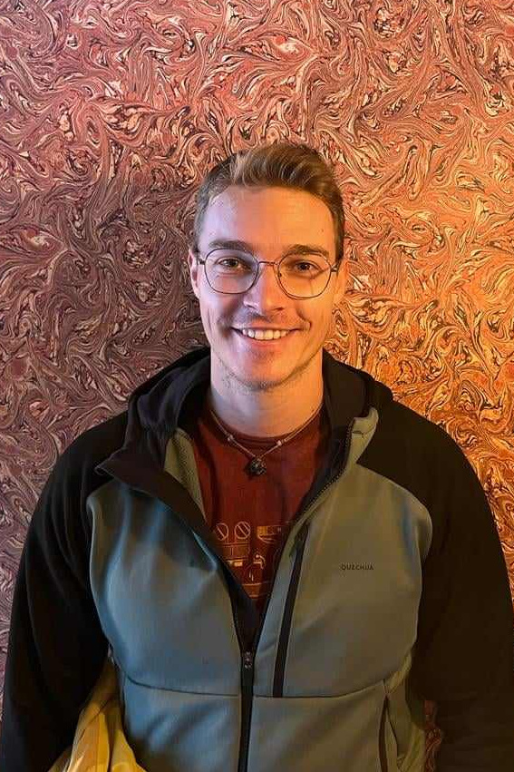

Arnaud Vadeboncoeur
I am a postdoctoral research associate in the Computational Statistics and Machine Learning Lab at the University of Cambridge, working with Prof. Mark Girolami.
My research is at the interface of statistical AI and computational mechanics for engineering applications.
I completed my PhD at Cambridge with Prof. Fehmi Cirak. You can find my thesis here:
Variational Inference and Probabilistic Models for Parametric Partial Differential Equations.
Research Vision
My goal is to bridge the trust gap in applying data-driven machine learning to engineering systems and scientific computing.
I develop statistical machine learning methods to build dependable models of our built environment.
Recently, I have been focusing on developing uncertainty quantification methodologies through learning highly informative priors
from collections of physical systems via generative models.
In particular, in
Efficient Prior Calibration From Indirect Data,
we learn optimal prior parameters of a pushforward model through a distribution matching approach. Furthermore, we concurrently learn a
surrogate model in the form of a Neural Operator through bi-level optimization to accelerate learning and obtain a scalable algorithm.
Building on this, Efficient Deconvolution in Populational Inverse Problems
extends this methodology to solve the blind deconvolution problem, where we learn the distribution of highly correlated polluting noise.
The proposed methodologies are applied to important problems in engineering and science, namely porous medium flow, elastodynamics, and
simplified models of atmospheric dynamics. These ideas are further extended in
Geometric Autoencoder Priors for Bayesian Inversion in learning priors of PDE solutions across different geometries.
Links & Contact
Jump to:
Publications |
Preprints |
Talks |
Journal Publications & Major Conference Proceedings
-
Efficient Deconvolution in Populational Inverse Problems
- Arnaud Vadeboncoeur*, Mark Girolami, Andrew M. Stuart
- To Appear: International Journal for Numerical Methods in Engineering (IJNME), arxiv:2505.19841, 2026, Code
- Geometric Autoencoder Priors for Bayesian Inversion: Learn First Observe Later
- Arnaud Vadeboncoeur*, Gregory Duthé*, Mark Girolami, Eleni Chatzi
- International Conference on Learning Representations (ICLR), 2026, arxiv
, Code
- Statistical Finite Element Method: A Theoretical Foundation for Digital Twins
- Connor Duffin, Alex Glyn-Davies*, Arnaud Vadeboncoeur, and Mark Girolami
- Quality Engineering, 2026
- Efficient Prior Calibration From Indirect Data
- O. Deniz Akyildiz, Mark Girolami, Andrew M. Stuart, Arnaud Vadeboncoeur*
- Society for Industrial and Applied Mathematics Journal on Scientific Computing (SIAM SISC), 2025, arxiv, Code
- A Primer on Variational Inference for Physics-Informed Deep Generative Modelling
- Alex Glyn-Davies♯, Arnaud Vadeboncoeur*♯, O. Deniz Akyildiz, Ieva Kazlauskaite and Mark Girolami
- Philosophical Transactions of the Royal Society A, 2025
- Deep Probabilistic Models for Forward and Inverse Problems in Parametric PDEs
- Arnaud Vadeboncoeur*, O. Deniz Akyildiz, Ieva Kazlauskaite, Mark Girolami, Fehmi Cirak
- Journal of Computational Physics, 2023, Code
- Random Grid Neural Processes for Parametric Partial Differential Equations
- Arnaud Vadeboncoeur*, Ieva Kazlauskaite, Yanni Papandreou, Fehmi Cirak, Mark Girolami, O. Deniz Akyildiz
- International Conference on Machine Learning (ICML), 2023, Code
Minor Conference Proceedings
- Probabilistic
Super-Resolution for High-Fidelity Physical System Simulations with Uncertainty Quantification
- Pengyu Zhang*, Connor Duffin, Alex Glyn-Davies, Arnaud Vadeboncoeur, and Mark Girolami
- 11th International Operational Modal Analysis Conference (IOMAC), 2025
-
Experimental and Analytical Investigation into the Effect of Corrosion on the Flexural Response of Reinforced
Concrete Beams
- Wesam Njeem*, Arnaud Vadeboncoeur, Beatriz Martı́n-Pérez, Ahmad Jrade, Hassan Aoude
- Canadian Society for Civil Engineering Conference Proceedings, 2019
Preprints
Talks Available Online
Invited Talks
-
Task-Specific Surrogate Modeling via Joint Parameter Estimation and Calibration
- PIML DAY - AgroParisTech, Université Paris-Saclay, France, Nov 2026
-
Learning Data-Driven Priors via Distributional Inverse Problems
- Institute for Mathematics, University of Heidelberg, Germany, Nov 2025
-
A Distribution Matching Perspective on Populational Inverse Problems in Mechanics
- Structural Mechanics and Monitoring Seminar, ETH Zurich, Switzerland, April 2025
-
Efficient Prior Calibration from Indirect Data: A Whiteboard Seminar
- Computing + Mathematical Sciences, California Institute of Technology, US, Nov 2024
-
Calibrating Parameter Distributions of Physical Models for Population-Based Inference
- University of Sheffield, UK, Oct 2024
-
Improving the Variational Learning of Physics Driven Neural Generative Models
- The Alan Turing Institute, London, UK, April 2023
-
Probabilistic Emulators for Forward and Inverse Parametric Physics Problems
- Mechanical Engineering, TUM Munich, Germany, Feb 2023
Presentations & Poster Sessions
-
Bayesian Learning for Physical Simulation
- CSIC Industry Showcase, Cambridge, March 2026 (Talk)
-
Coupled Learning of Populational Inverse Problems and Physics-Informed Neural Operators
- Coupled 2025 IACM Conference, Sardinia, Italy, May 2025 (Talk)
-
Population-Based Inference in Mechanics
- Structures Seminar series, University of Cambridge, UK, Feb 2025 (Talk)
-
A Populational Perspective on Inverse Problems
- Data-Centric Engineering Workshop, University of Cambridge, UK, Jan 2025 (Talk)
-
Population-Based Learning of Physical Systems
- Cambridge Centre for Smart Infrastructure and Construction, Aug 2024 (Poster)
-
Efficient Prior Calibration from Indirect Data
- ICMS: Machine Learning in Infinite Dimensions Workshop, University of Bath, UK, Aug 2024 (Poster)
-
Physics-Driven Deep Latent Variable Models: Solving Forward and Inverse Problems in Parametric PDEs
- SIAM Uncertainty Quantification (UQ24), Trieste, Italy, Feb 2024 (Talk)
-
On Random Grid Neural Processes for Solving Forward and Inverse Problems in Parametric PDEs
- Phi-ML seminar series, The Alan Turing Institute, UK, Sept 2023 (Online Talk)
-
Random Grid Neural Processes for Parametric Partial Differential Equations
- ICML, Honolulu, Hawaii, US, July 2023 (Poster)
-
Probabilistic Phi-ML; Scalable Deep probabilistic Models for Parametric PDEs
- Cambridge CDT Phi-ML workshop, The Alan Turing Institute, June 2023 (Online Talk)
-
Deep Probabilistic Models for Forward and Inverse Problems in Parametric PDEs
- Neurips @ Cambridge, University of Cambridge, UK, Dec 2022 (Poster)
-
Physics Informed Generative Models: Scalable Deep probabilistic Models for Difficult PDEs
- The Alan Turing Institute, Sept 2022 (Talk)
- Physics-Aware ML and Data Assimilation Group, Imperial College London, Sept 2022 (Online Talk)
-
Active Learning Projected Surrogates for Large Scale Bayesian Inverse Problems
- UK Association for Computational Mechanics, University of Nottingham, UK, April 2022 (Talk, 1st Prize)
-
The Rehabilitation of the Prince of Wales Bridge
- CSCE Conference, Montreal, Canada, May 2019 (Talk, 1st Prize)
-
Wind effect on high-rise buildings of different geometry
- University of Ottawa, Canada, May 2017 (Poster)
* Corresponding author(s), ♯ Equal contribution